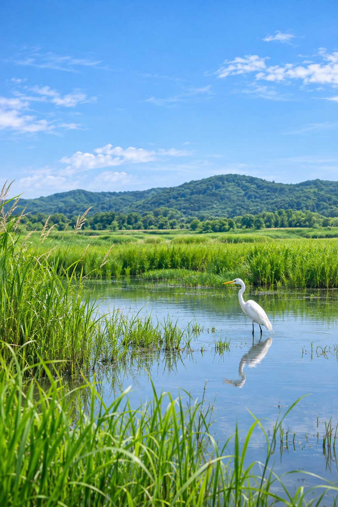
수천 킬로미터를 건너
다시 돌아오는 곳
계절을 따라
다시 이곳을 찾는
철새들의 이야기
철새는 계절을 따라 지구를 이동합니다
BEYOND THE HORIZON철새가 머무는 곳, 그 경계는 끝이 없습니다.
BREEDING GROUND번식지
STOPOVER SITE중간기착지
WINTERING GROUND월동지
철새가 머물다 가는 곳
한반도의 서식지
나라와 나라를 오가며 계절을 지내는
새의 거대한 여정
계절마다 변하는 철새들의 여정
3~5월
번식지로 이동하는 철새들
6~8월
번식과 새끼 양육의 계절
9~11월
월동지로 떠나는 철새들
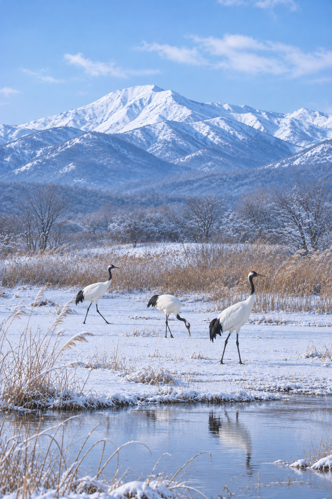
12~2월
한반도에서 겨울을 나는 철새들
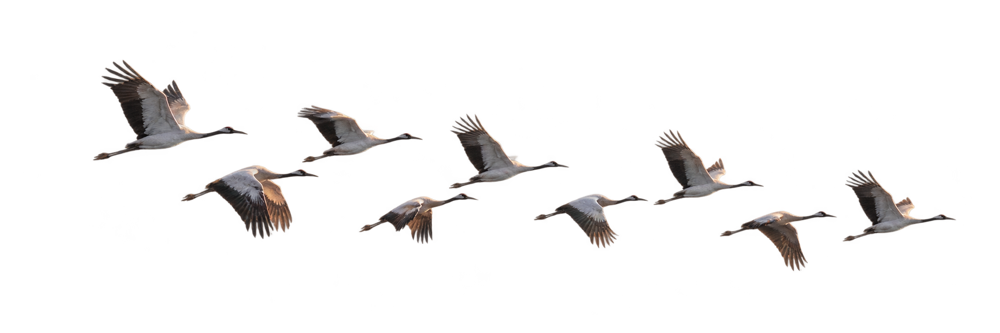
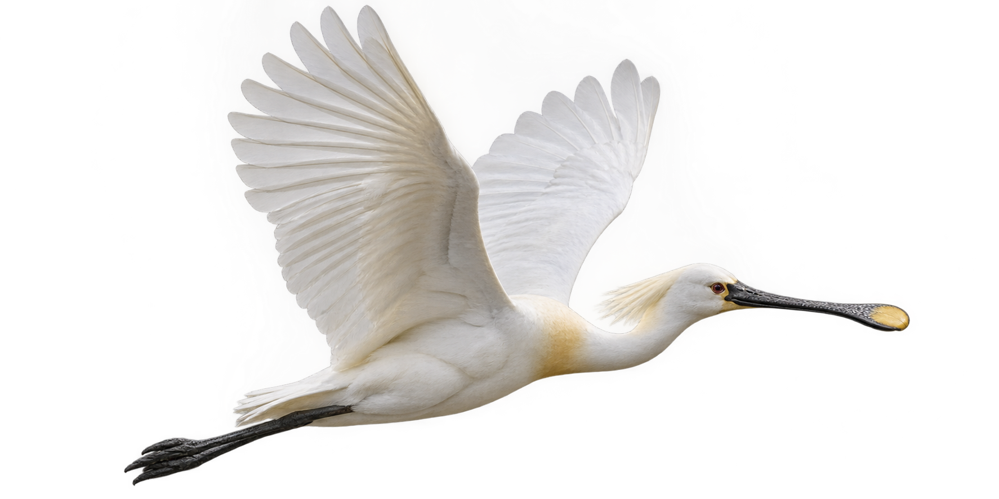
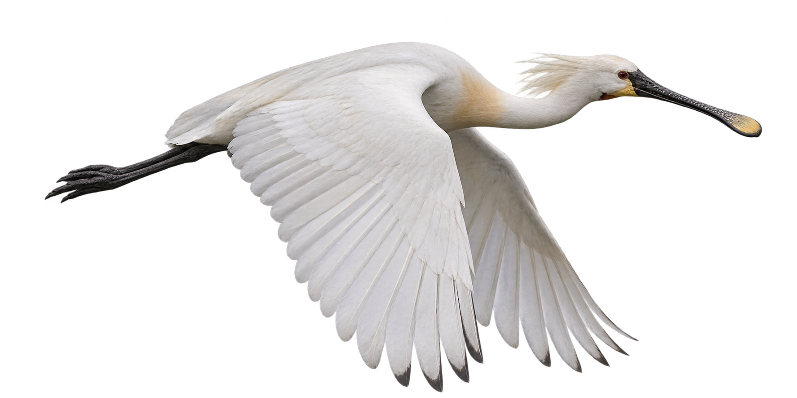
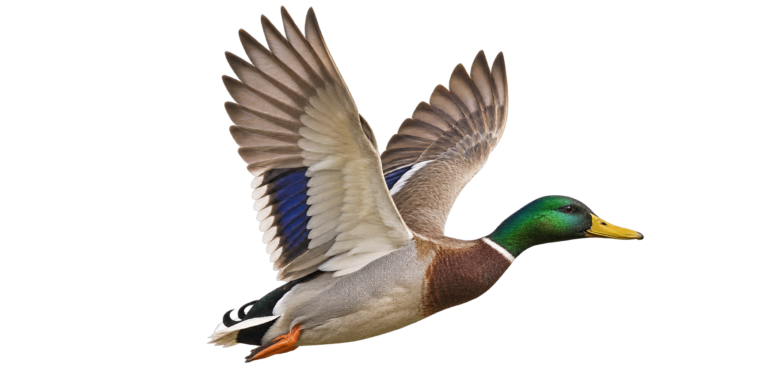
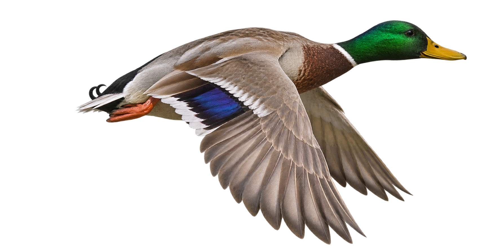
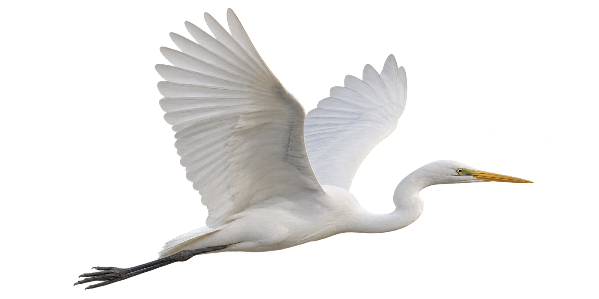
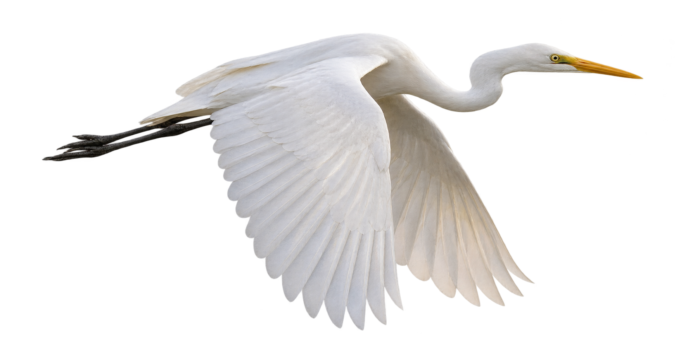
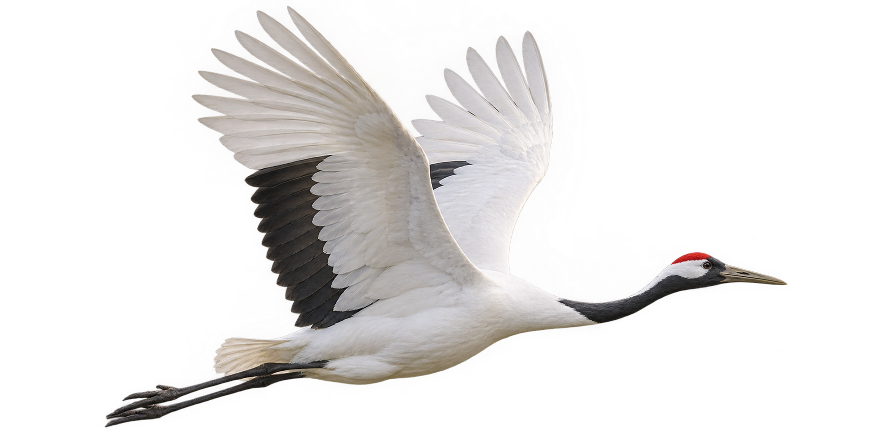
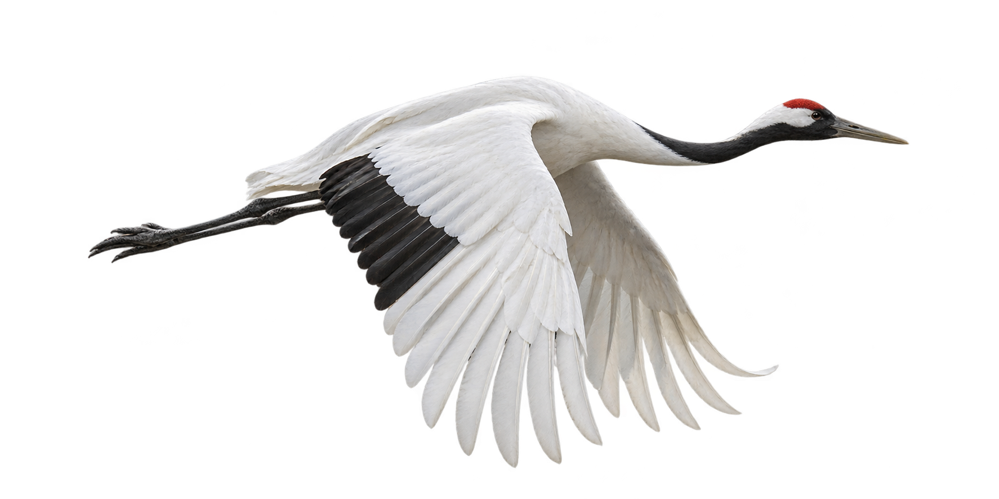
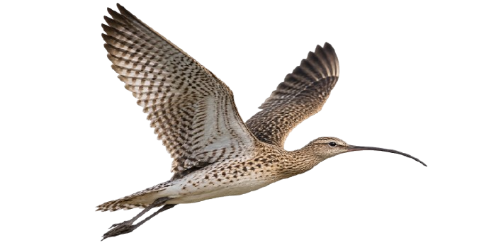
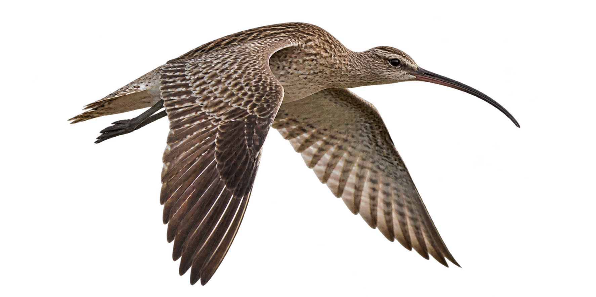
철새와 사람이 함께하는 터전
철새들의 비행길